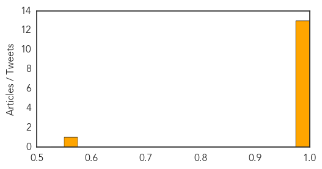

Ebola
30-Day Web Trend
13 alerts, 4 warnings

30-Day Twitter Trend
0 alerts, 0 warnings

Article Locations

Article Confidences
Top Articles:
- 1.000
- 'Most Challenging' Deadly Disease Outbreak: WHO Speaks Out On Ebola Dangers
- 1.000
- Ebola outbreak is 'out of control' in West Africa, says medical expert
- 1.000
- Ebola spread due to 'relaxation' of efforts
- 1.000
- Epidemic: Ebola deaths reach 337 in 3 countries in 'most challenging' outbreak
- 1.000
- 'Ebola virus is totally out of control', medics warn
- 1.000
- Sierra Leone steps up measures to tackle Ebola outbreak
- 0.999
- Ebola virus in West Africa claiming hundreds of lives: Many fear it is now out of control
- 0.999
- What a relief!
- 0.998
- Doctors Without Borders: Ebola in West Africa 'Out of Control'
- 0.997
- Ebola virus kills eighth person in two weeks in Monrovia Liberia
- 0.997
- Ebola 'out of control' as 330 deaths reported
- 0.995
- Ebola outbreak in W.Africa 'totally out of control' , warns MSF
- 0.993
- Massive West African Ebola outbreak ‘now in a second wave’
- 0.570
- CDC: More anthrax exposure possible
Top Tweets:
-
No tweets found for Jun 22, 2014
Unknown
30-Day Web Trend
0 alerts, 0 warnings

30-Day Twitter Trend
1 alerts, 0 warnings

Article Locations

Article Confidences

Top Articles:
- 0.992
- In US, MERS patients did not spread infection to close contacts, CDC finds
- 0.917
- Chicago Tribune
- 0.917
- Chicago Tribune
- 0.917
- Chicago Tribune
- 0.917
- Chicago Tribune
- 0.917
- Chicago Tribune
- 0.915
- Centre coordinating with Bihar state in tackling encephalitis
- 0.910
- The Island
- 0.903
- Malaria continues havoc in Tripura, toll now 41
- 0.893
- Centre coordinating with Bihar state in tackling encephalitis: Dr. Harshvardhan
- 0.866
- Traffic halted at Iraqi border with Jordan
- 0.866
- Police stand near a burning vehicle set on fire by Kosovo Albanians during a protest in the ethnically divided town of Mitrovica
- 0.866
- Putin tells Merkel, Hollande Ukraine peace plan should include ceasefire-Kremlin
- 0.858
- Vaccination campaign against encephalitis launched in Bihar
- 0.857
- Encephalitis vaccination campaign launched in Bihar
- 0.855
- Vaccination Campaign Against Encephalitis Launched in Bihar
- 0.854
- Demand more answers about Lyme disease, ticks — Opinion — Bangor Daily News — BDN Maine
- 0.813
- National HIV Testing Day encourages awareness of virus
- 0.805
- McLaren Bay Region infection prevention experts, doctors talk hygiene and cleanliness at the hospital
- 0.733
- E.coli detected on Fire Island
- 0.716
- Invisible threats, invisible victims: What Michigan hospitals don't want you to know about infections
- 0.709
- USDA to investigate CDC anthrax breach as number exposed rises, not the first ‘laboratory accident’
- 0.649
- News affecting world travel 6/19/14
- 0.643
- Ministry launches war against trachoma
- 0.622
- Centre to launch encephalitis immunization campaign Sunday
- 0.603
- Why you should think before you ink Republican American
- 0.570
- Meeting on vector borne diseases held at Wangkhei : 22nd jun14 ~ E-Pao! Headlines
- 0.531
- Lack of coordination hampering vaccination of NWA children - Pakistan
- 0.509
- Nepali docs found ‘severely lacking’ in people skills
Top Tweets:
-
No tweets found for Jun 22, 2014